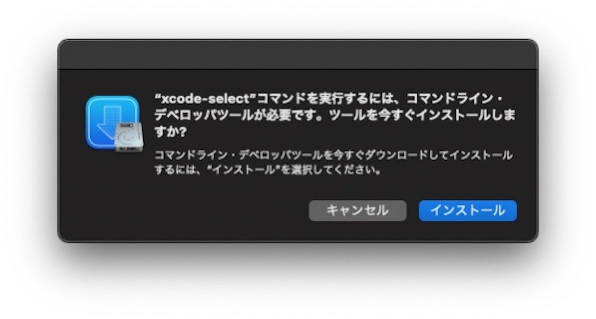

Big Surを再インストールしたらpythonが動かなくなった
事の発端:何故かアプデに失敗
は？
中のデータは生きてます
Catalinaあたりからユーザ領域が分離されているので、正しく再インストールすればデータは死なない
冷や汗かいた
いやーM1怖アッ…
で、pythonが動かない
user@Mac-mini ~ % python3 -V
xcrun: error: invalid active developer path (/Library/Developer/CommandLineTools), missing xcrun at: /Library/Developer/CommandLineTools/usr/bin/xcrun
再インスコしてハイ元通り〜〜とはならないみたいで…
Command Line Toolsを入れる(解決)
user@Mac-mini ~ % xcode-select —install
xcode-select: note: install requested for command line developer tools

確認のポップアップが出ます
これで再びpythonが使えるようになりました
OSを再インストールするとCommand Line Toolsも再度インストールしないといけないんですね、めんどくさ
Big Surのアプデが怖くなったので11.2.2のアプデは放置しています